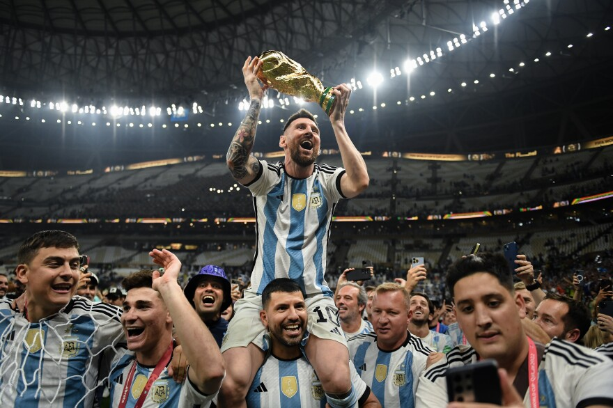

What Argentina Winning the World Cup Meant to Me
My family is Argentinian. That is not background information. It is the first thing you need to know to understand why December 18, 2022 was one of the most important days of my life, even though I was watching from a living room in Miami.
Growing up in an Argentinian family outside of Argentina means you carry the country with you in specific ways. In the food, the music, the way people argue at dinner, the way they celebrate. And above everything else, in soccer. Soccer is not a hobby in Argentina. It is a language. It is how people process pride, heartbreak, patience, and belief. It is passed down the same way stories are.
I grew up watching my family talk about Maradona the way some people talk about a relative. The 1986 World Cup was not ancient history. It was a living thing, retold constantly, weighted with meaning. By the time I was old enough to understand, Argentina had not won a World Cup in decades. And Messi, the greatest player most of us had ever seen, had never lifted the trophy. That absence hung over everything.
The 2022 tournament in Qatar was different from the start. Not because of predictions or bracket analysis, but because it felt like something was converging. When Argentina lost their opening match to Saudi Arabia, the silence in our house was heavy. Nobody spoke about it for hours. That is how it works. You do not rationalize. You just sit with it.
Then they started winning. And the further they went, the more it stopped being about soccer. It became about time. About all the years of watching and waiting. About my parents, my grandparents, about people who had been carrying this hope longer than I had been alive.
The final against France was the most intense sporting event I have ever witnessed. I do not think I will ever experience something like it again. When Messi scored, when Mbappe answered, when penalties began, the room was shaking. When the last kick went in and Argentina won, what happened was not celebration in the normal sense. People cried. My family cried. I cried.
It was connection. Pride in something larger than yourself. A reminder that some things take decades of patience and still arrive exactly when they are supposed to. It taught me something about belief: not the motivational poster version, but the real kind, the kind that survives loss and keeps going.
I think about that day often. Not because of the score, but because of what it revealed. That identity is not something you choose. It is something you inherit, carry, and one day feel so deeply it shakes you.